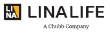
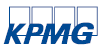
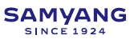
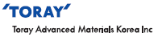

in Story & News
Member Companies
Headline
Dongsung Chemical
Dongsung Chemical Opens Southeast Asia’s Leading Global PU Hub in Indonesia
Eco-friendly materials science company, Dongsung Chemical has completed construction of a new polyurethane (PU) plant in Karawang, Indonesia, holding its official opening ceremony on April 30.
Covering 81,000㎡, the new facility has an annual production capacity of approximately 67,000 tons of prepolymers, polyesters, and PU resins, with projected sales potential of around KRW 200 billion. This scale is three times the combined output of Dongsung’s existing PU plants in Korea, Vietnam, and China. Equipped with storage facilities for up to 1,000 tons of core raw materials, the plant can maintain a stable production system even amid global supply chain disruptions. Automated systems further enhance production efficiency.
Dongsung plans to leverage this facility as a strategic base to expand into Southeast Asia, the Americas, and Europe, bolstering its global competitiveness.
Zeniel Group
Zeniel’s IT Offshoring Strategy Aims to Solve Korea’s IT Talent Shortage
With Korea’s IT talent shortage intensifying, Zeniel Group is proposing IT offshoring as a solution. On February 26, the company hosted the “Together Vietnam 2025” conference at Yangjae EL Tower under the theme “Challenges and Solutions for IT Developer Offshoring Services.”
Zeniel showcased its collaborations with Vietnamese IT companies, highlighting key challenges and strategies for effective offshoring. Unlike simple staffing solutions, Zeniel offers integrated HR consulting services covering recruitment, training, and management—supporting clients’ digital transformation and core capability development.
Through strategic partnerships with Vietnam’s skilled IT professionals, Zeniel aims to shorten training time, improve cost-efficiency, and offer tailored solutions that address structural mismatches in Korea’s IT labor market.
Lina Life Insurance
Lina Life Named Korea’s Lowest Complaint Insurance Provider for 8th Consecutive Year
Lina Life Insurance has once again been recognized as the insurance provider with the fewest consumer complaints, according to the Financial Supervisory Service’s “2024 Financial Complaints and Counseling Trends” report. With only 4.6 complaints per 100,000 contracts in 2024—down from 5.1 in 2023—Lina has topped the industry for eight consecutive years. Despite a 100% focus on protection-type insurance—typically associated with high complaint volumes—and operating in a fiercely competitive market, Lina has maintained its top ranking.
The company has established consumer-centric standards and systems across product planning, sales, and claims processes. Lina’s commitment to customer protection earned it the 2024 Consumer-Centered Management (CCM) certification.
CEO Ji-eun Cho stated, “Lina Life will continue to put customers first and strive to be the company of choice for better living.”
UNID
UNID Launches Yichang Plant in Hubei Province, Strengthening China Market Penetration
Amid intensifying competition in China’s chemical industry, UNID has completed and launched a new potassium hydroxide (KOH) production facility in Yichang, Hubei Province. More than just a capacity expansion project, the plant represents a strategic inland base to enhance responsiveness and market share in China. With a total investment of KRW 230 billion, the Yichang facility will be expanded in phases to reach 180,000 tons annual capacity by 2027. The first phase—90,000 tons—is already in stable operation.
Located near key western and central Chinese markets such as Guangdong, Chongqing, Sichuan, and Jiangxi, the plant will help secure revenue growth through enhanced supply and demand preemption. Equipped with advanced technologies for high production efficiency, the facility also benefits from fixed cost savings through scale, strengthening cost competitiveness. UNID aims to position Yichang as a core supply hub in China and reinforce its global market standing.
SPC Group
SPC Baskin Robbins Opens Pink Dream Garden for Children
To celebrate Children’s Day on May 5, SPC Group’s Baskin Robbins opened the Pink Dream Garden, an eco-friendly play area in Seoul Children’s Grand Park.
Constructed using upcycled Baskin -Robbins pink spoons, the garden showcases collaboration between businesses and consumers to create sustainable, socially impactful spaces. Since May 2023, the company has collected, crushed, and repurposed spoons—underscoring the importance of resource circulation.
The garden is part of Baskin Robbins’ flagship CSR initiative, the “Pink Dream Campaign.” In addition, the brand donates 3.1% of proceeds from its monthly “31 Day” event to charity, continuing its active commitment to social contribution.
SPC Group Vice President Hee-soo Hur stated, “We will continue expanding activities that generate social value and embody our commitment to sharing through Baskin Robbins.”
KBI Group
KBI Group Donates KRW 100 Million to Support Wildfire Recovery in Gyeongbuk Province
On May 12, KBI Group donated KRW 100 million to support recovery efforts following massive wildfires in Gyeongsangbuk-do. Vice Chairman Han-sang Park visited the Gyeongsangbuk-do Provincial Government Office with employees from KBI Kukin Industries to meet Governor Cheol-woo Lee and deliver the donation, which was raised across KBI Group affiliates to aid affected residents.
The contribution comes from a sense of responsibility as a corporate citizen, with KBI operating multiple facilities in the region—including KBI Kukin Industries (Gumi, Waegwan, Andong), KBI Dongkook Industries (Gyeongju), and KB Gumi Rehabilitation Hospital (Gumi).
Previously, in April 2023, KBI Group also donated KRW 50 million to the Gyeongbuk Community Chest of Korea to support solutions to Korea’s declining birth rate, exemplifying its ongoing commitment to regional development and social contribution.
Samjong KPMG
Samjong KPMG Launches AI-Based Smart Disclosure Automation Platform for Information Security
On May 14, Samjong KPMG released its new “Smart Information Security Disclosure Automation Platform,” leveraging AI-based keyword classification to streamline complex disclosure tasks. The platform automatically identifies relevant information security items within accounting data and extracts labor cost data quickly and accurately.
As a result, preparation time for disclosure reports can be reduced by up to 90%. For large enterprises, tasks that previously took weeks can now be completed within a day, while also minimizing human error and improving data accuracy. The platform is also expected to significantly reduce costs associated with disclosure processes. A SaaS-based subscription version is planned to allow enterprises to adopt the tool independently.
Samyang Group
Samyang Group’s Sudang Foundation Holds 34th Sudang Award Ceremony
On May 20, the Sudang Foundation—Samyang Group’s scholarship foundation—held the 34th Sudang Award ceremony at Lotte Hotel in Sogong-dong, Seoul.
The award was established to honor the legacy of founder Yeon-su Kim, who emphasized industrial development and talent cultivation. Each year, two distinguished researchers are selected and awarded KRW 200 million and a commemorative plaque. This year’s recipients were Professor Hyo-chul Lee of KAIST’s Department of Chemistry and Distinguished Professor Jung-hee Lee of Jeonbuk National University’s Department of Nano Convergence Engineering.
Chairman Yoon Kim of the foundation remarked, “We express deep gratitude and respect for the awardees’ achievements and hope they continue to advance academic excellence and foster the next generation in line with the Sudang spirit.”
LG Uplus
LG Uplus Becomes First Korean Telecom Company to Earn Customer Delight Call Center Certification
LG Uplus has received the “Customer Delight Call Center” certification in the mobile and high-speed internet categories from the Korea Management Association Consulting’s 2025 KSQI index.
Among 339 surveyed companies, only 13 (4%) earned this distinction, and LG Uplus is the first telecom company ever to do so.
The company has significantly improved consultation quality by adopting customer-friendly service practices and elevating evaluation standards. Its approach combines advanced AI technologies with human empathy, delivering emotionally resonant customer experiences. Namhee Seo, Head of Customer Value at LG Uplus, stated, “This certification is a testament to our customer-centric innovation. We will continue to integrate empathy with AI to exceed customer expectations.”
Toray Advanced Materials
Toray Advanced Materials Signs MOU with Haier to Strengthen Water Treatment Business in China
On June 4, Toray Advanced Materials signed a memorandum of understanding with China’s Haier to collaborate on water treatment technology. Under the agreement, Toray’s advanced reverse osmosis (RO) membrane filters will be integrated into Haier water purifiers, accelerating market expansion in China. The two companies also plan to jointly develop flat membrane-based filters, aiming to enhance performance and create technological differentiation. Toray will strengthen its strategic partnership with Haier and establish a sustainable technology alliance not only in China but also in global markets, expanding the reach of its water treatment products.
As Korea’s first developer of RO membranes in 1994, Toray provides comprehensive water solutions for drinking water, ultrapure water, wastewater reuse, and desalination. Its proprietary ECO series filters are recognized globally for their top-tier quality.
Taekwang Industrial
Taekwang Industrial Launches ACECOOL-BIO, Korea’s First Eco-Friendly Cooling Nylon Fiber
Taekwang Industrial, the textile and petrochemical arm of Taekwang Group, has introduced ACECOOL-BIO, Korea’s first bio-based nylon yarn offering both advanced cooling functionality and eco-friendliness.
Derived from plant-based raw materials, ACECOOL-BIO dramatically improves moisture absorption compared to conventional nylon fibers. It also significantly reduces carbon emissions during production. The fiber features superior dyeability and color vibrancy, along with shortened dyeing processes that conserve energy.
With its cooling and quick-drying properties, ACECOOL-BIO is expected to see wide adoption in sportswear and performance innerwear. Taekwang plans to aggressively market the product and unveil additional new brands in the second half of the year to secure leadership in the premium eco-friendly textile market.